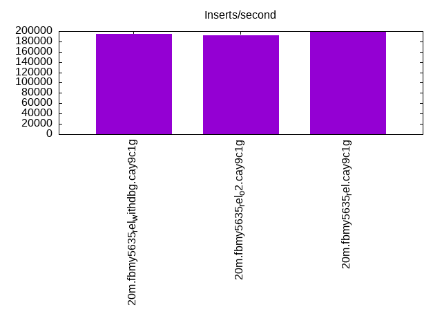
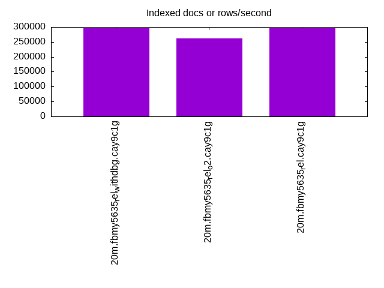
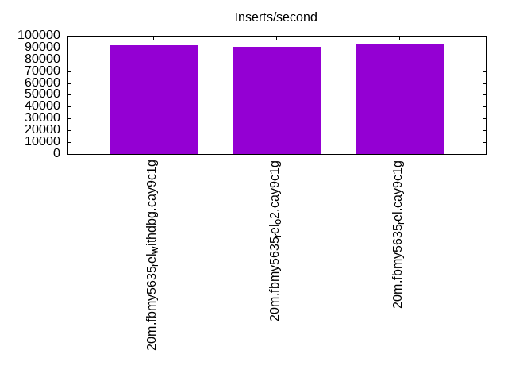
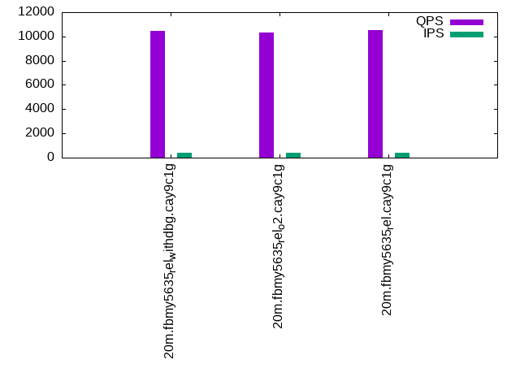
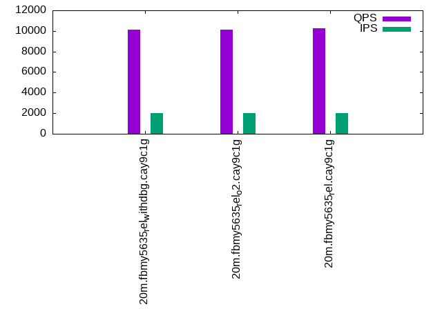
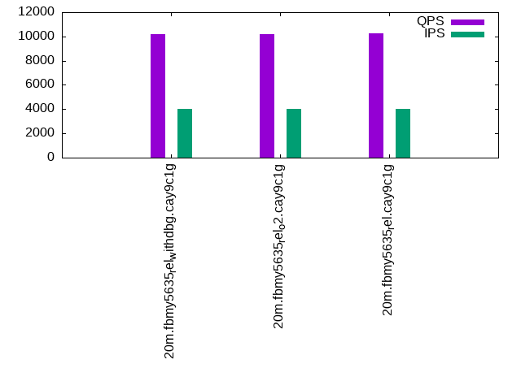

This is a report for the insert benchmark with 20M docs and 4 client(s). It is generated by scripts (bash, awk, sed) and Tufte might not be impressed. An overview of the insert benchmark is here and a short update is here. Below, by DBMS, I mean DBMS+version.config. An example is my8020.c10b40 where my means MySQL, 8020 is version 8.0.20 and c10b40 is the name for the configuration file.
The test server has 8 AMD cores, 16G RAM and an NVMe SSD. It is described here as the Beelink. The benchmark was run with 4 clients and there were 1 or 2 connections per client (1 for queries, 1 for inserts). The benchmark loads 20M rows without secondary indexes, creates secondary indexes, loads another 20M rows then does 3 read+write tests for one hour each that do queries as fast as possible with 100, 500 and then 1000 writes/second/client concurrent with the queries. There is one table per client. The database is cached by the OS page cache but not by the storage engine. Clients and the DBMS share one server. The per-database configs are in the per-database subdirectories here.
The tested DBMS are:
The numbers are inserts/s for l.i0 and l.i1, indexed docs (or rows) /s for l.x and queries/s for q*.2. The values are the average rate over the entire test for inserts (IPS) and queries (QPS). The range of values for IPS and QPS is split into 3 parts: bottom 25%, middle 50%, top 25%. Values in the bottom 25% have a red background, values in the top 25% have a green background and values in the middle have no color. A gray background is used for values that can be ignored because the DBMS did not sustain the target insert rate. Red backgrounds are not used when the minimum value is within 80% of the max value.
| dbms | l.i0 | l.x | l.i1 | q100.1 | q500.1 | q1000.1 |
|---|---|---|---|---|---|---|
| 20m.fbmy5635_rel_withdbg.cay9c1g | 194175 | 295588 | 91743 | 10427 | 10153 | 10201 |
| 20m.fbmy5635_rel_o2.cay9c1g | 192308 | 261039 | 90909 | 10308 | 10119 | 10196 |
| 20m.fbmy5635_rel.cay9c1g | 198020 | 295588 | 92592 | 10514 | 10269 | 10270 |
This table has relative throughput, throughput for the DBMS relative to the DBMS in the first line, using the absolute throughput from the previous table.
| dbms | l.i0 | l.x | l.i1 | q100.1 | q500.1 | q1000.1 |
|---|---|---|---|---|---|---|
| 20m.fbmy5635_rel_withdbg.cay9c1g | 1.00 | 1.00 | 1.00 | 1.00 | 1.00 | 1.00 |
| 20m.fbmy5635_rel_o2.cay9c1g | 0.99 | 0.88 | 0.99 | 0.99 | 1.00 | 1.00 |
| 20m.fbmy5635_rel.cay9c1g | 1.02 | 1.00 | 1.01 | 1.01 | 1.01 | 1.01 |
This lists the average rate of inserts/s for the tests that do inserts concurrent with queries. For such tests the query rate is listed in the table above. The read+write tests are setup so that the insert rate should match the target rate every second. Cells that are not at least 95% of the target have a red background to indicate a failure to satisfy the target.
| dbms | q100.1 | q500.1 | q1000.1 |
|---|---|---|---|
| fbmy5635_rel_withdbg.cay9c1g | 399 | 1993 | 3989 |
| fbmy5635_rel_o2.cay9c1g | 399 | 1994 | 3989 |
| fbmy5635_rel.cay9c1g | 399 | 1994 | 3989 |
| target | 400 | 2000 | 4000 |
l.i0: load without secondary indexes. Graphs for performance per 1-second interval are here.
Average throughput:
Insert response time histogram: each cell has the percentage of responses that take <= the time in the header and max is the max response time in seconds. For the max column values in the top 25% of the range have a red background and in the bottom 25% of the range have a green background. The red background is not used when the min value is within 80% of the max value.
| dbms | 256us | 1ms | 4ms | 16ms | 64ms | 256ms | 1s | 4s | 16s | gt | max |
|---|---|---|---|---|---|---|---|---|---|---|---|
| fbmy5635_rel_withdbg.cay9c1g | 99.763 | 0.220 | 0.005 | 0.013 | 0.103 | ||||||
| fbmy5635_rel_o2.cay9c1g | 99.764 | 0.219 | 0.003 | 0.013 | 0.114 | ||||||
| fbmy5635_rel.cay9c1g | 99.749 | 0.237 | 0.001 | 0.013 | 0.107 |
Performance metrics for the DBMS listed above. Some are normalized by throughput, others are not. Legend for results is here.
ips qps rps rmbps wps wmbps rpq rkbpq wpi wkbpi csps cpups cspq cpupq dbgb1 dbgb2 rss maxop p50 p99 tag 194175 0 0 0.0 122.0 51.3 0.000 0.000 0.001 0.271 20093 72.5 0.103 30 0.9 1.9 0.4 0.103 54541 18680 20m.fbmy5635_rel_withdbg.cay9c1g 192308 0 0 0.0 124.2 52.3 0.000 0.000 0.001 0.278 19892 73.4 0.103 31 0.8 1.8 0.4 0.114 52741 23474 20m.fbmy5635_rel_o2.cay9c1g 198020 0 0 0.0 122.2 51.5 0.000 0.000 0.001 0.267 20134 72.1 0.102 29 0.9 1.9 0.4 0.107 55157 22284 20m.fbmy5635_rel.cay9c1g
l.x: create secondary indexes.
Average throughput:
Performance metrics for the DBMS listed above. Some are normalized by throughput, others are not. Legend for results is here.
ips qps rps rmbps wps wmbps rpq rkbpq wpi wkbpi csps cpups cspq cpupq dbgb1 dbgb2 rss maxop p50 p99 tag 295588 0 1 0.0 128.8 54.1 0.000 0.000 0.000 0.187 614 49.1 0.002 13 1.4 2.4 1.5 0.008 NA NA 20m.fbmy5635_rel_withdbg.cay9c1g 261039 0 1 0.0 108.6 45.6 0.000 0.000 0.000 0.179 546 48.0 0.002 15 1.4 2.5 1.5 0.024 NA NA 20m.fbmy5635_rel_o2.cay9c1g 295588 0 1 0.0 131.8 55.7 0.000 0.000 0.000 0.193 656 48.6 0.002 13 1.4 2.4 1.6 0.003 NA NA 20m.fbmy5635_rel.cay9c1g
l.i1: continue load after secondary indexes created. Graphs for performance per 1-second interval are here.
Average throughput:
Insert response time histogram: each cell has the percentage of responses that take <= the time in the header and max is the max response time in seconds. For the max column values in the top 25% of the range have a red background and in the bottom 25% of the range have a green background. The red background is not used when the min value is within 80% of the max value.
| dbms | 256us | 1ms | 4ms | 16ms | 64ms | 256ms | 1s | 4s | 16s | gt | max |
|---|---|---|---|---|---|---|---|---|---|---|---|
| fbmy5635_rel_withdbg.cay9c1g | 99.594 | 0.392 | 0.007 | 0.007 | 0.117 | ||||||
| fbmy5635_rel_o2.cay9c1g | 99.607 | 0.386 | nonzero | 0.007 | 0.110 | ||||||
| fbmy5635_rel.cay9c1g | 99.611 | 0.379 | 0.004 | 0.007 | 0.108 |
Performance metrics for the DBMS listed above. Some are normalized by throughput, others are not. Legend for results is here.
ips qps rps rmbps wps wmbps rpq rkbpq wpi wkbpi csps cpups cspq cpupq dbgb1 dbgb2 rss maxop p50 p99 tag 91743 0 10 1.2 172.7 69.7 0.000 0.014 0.002 0.778 20098 74.1 0.219 65 4.7 6.5 1.4 0.117 23583 18080 20m.fbmy5635_rel_withdbg.cay9c1g 90909 0 11 1.4 169.8 68.6 0.000 0.016 0.002 0.773 19744 75.2 0.217 66 3.5 5.3 1.3 0.110 23474 17388 20m.fbmy5635_rel_o2.cay9c1g 92592 0 12 1.5 173.4 69.9 0.000 0.017 0.002 0.773 20258 73.9 0.219 64 4.3 6.0 1.3 0.108 23931 17836 20m.fbmy5635_rel.cay9c1g
q100.1: range queries with 100 insert/s per client. Graphs for performance per 1-second interval are here.
Average throughput:
Query response time histogram: each cell has the percentage of responses that take <= the time in the header and max is the max response time in seconds. For max values in the top 25% of the range have a red background and in the bottom 25% of the range have a green background. The red background is not used when the min value is within 80% of the max value.
| dbms | 256us | 1ms | 4ms | 16ms | 64ms | 256ms | 1s | 4s | 16s | gt | max |
|---|---|---|---|---|---|---|---|---|---|---|---|
| fbmy5635_rel_withdbg.cay9c1g | 9.002 | 90.991 | 0.006 | 0.001 | 0.015 | ||||||
| fbmy5635_rel_o2.cay9c1g | 8.532 | 91.462 | 0.006 | 0.001 | 0.013 | ||||||
| fbmy5635_rel.cay9c1g | 10.299 | 89.693 | 0.007 | 0.001 | 0.012 |
Insert response time histogram: each cell has the percentage of responses that take <= the time in the header and max is the max response time in seconds. For max values in the top 25% of the range have a red background and in the bottom 25% of the range have a green background. The red background is not used when the min value is within 80% of the max value.
| dbms | 256us | 1ms | 4ms | 16ms | 64ms | 256ms | 1s | 4s | 16s | gt | max |
|---|---|---|---|---|---|---|---|---|---|---|---|
| fbmy5635_rel_withdbg.cay9c1g | 99.347 | 0.590 | 0.062 | 0.035 | |||||||
| fbmy5635_rel_o2.cay9c1g | 99.424 | 0.562 | 0.014 | 0.028 | |||||||
| fbmy5635_rel.cay9c1g | 99.493 | 0.507 | 0.011 |
Performance metrics for the DBMS listed above. Some are normalized by throughput, others are not. Legend for results is here.
ips qps rps rmbps wps wmbps rpq rkbpq wpi wkbpi csps cpups cspq cpupq dbgb1 dbgb2 rss maxop p50 p99 tag 399 10427 23 0.3 8.0 2.0 0.002 0.026 0.020 5.167 39156 50.6 3.755 388 2.8 4.7 1.3 0.015 2589 2269 20m.fbmy5635_rel_withdbg.cay9c1g 399 10308 17 0.2 7.7 1.9 0.002 0.023 0.019 4.756 38726 50.5 3.757 392 2.8 4.7 1.4 0.013 2525 2285 20m.fbmy5635_rel_o2.cay9c1g 399 10514 17 0.2 7.9 1.9 0.002 0.023 0.020 4.992 39547 50.6 3.762 385 2.8 4.7 1.4 0.012 2637 2253 20m.fbmy5635_rel.cay9c1g
q500.1: range queries with 500 insert/s per client. Graphs for performance per 1-second interval are here.
Average throughput:
Query response time histogram: each cell has the percentage of responses that take <= the time in the header and max is the max response time in seconds. For max values in the top 25% of the range have a red background and in the bottom 25% of the range have a green background. The red background is not used when the min value is within 80% of the max value.
| dbms | 256us | 1ms | 4ms | 16ms | 64ms | 256ms | 1s | 4s | 16s | gt | max |
|---|---|---|---|---|---|---|---|---|---|---|---|
| fbmy5635_rel_withdbg.cay9c1g | 7.016 | 92.951 | 0.032 | 0.001 | 0.014 | ||||||
| fbmy5635_rel_o2.cay9c1g | 6.676 | 93.299 | 0.025 | 0.001 | 0.015 | ||||||
| fbmy5635_rel.cay9c1g | 7.758 | 92.211 | 0.030 | 0.001 | nonzero | 0.021 |
Insert response time histogram: each cell has the percentage of responses that take <= the time in the header and max is the max response time in seconds. For max values in the top 25% of the range have a red background and in the bottom 25% of the range have a green background. The red background is not used when the min value is within 80% of the max value.
| dbms | 256us | 1ms | 4ms | 16ms | 64ms | 256ms | 1s | 4s | 16s | gt | max |
|---|---|---|---|---|---|---|---|---|---|---|---|
| fbmy5635_rel_withdbg.cay9c1g | 97.975 | 2.007 | 0.018 | 0.047 | |||||||
| fbmy5635_rel_o2.cay9c1g | 98.236 | 1.747 | 0.017 | 0.047 | |||||||
| fbmy5635_rel.cay9c1g | 97.893 | 2.090 | 0.017 | 0.046 |
Performance metrics for the DBMS listed above. Some are normalized by throughput, others are not. Legend for results is here.
ips qps rps rmbps wps wmbps rpq rkbpq wpi wkbpi csps cpups cspq cpupq dbgb1 dbgb2 rss maxop p50 p99 tag 1993 10153 0 0.0 8.2 2.1 0.000 0.000 0.004 1.103 37980 51.2 3.741 403 3.1 3.5 1.4 0.014 2493 2222 20m.fbmy5635_rel_withdbg.cay9c1g 1994 10119 0 0.0 7.0 1.7 0.000 0.000 0.003 0.854 37914 51.0 3.747 403 3.2 3.5 1.4 0.015 2509 2206 20m.fbmy5635_rel_o2.cay9c1g 1994 10269 0 0.0 7.8 2.0 0.000 0.000 0.004 1.014 38467 51.1 3.746 398 3.2 3.5 1.4 0.021 2557 2238 20m.fbmy5635_rel.cay9c1g
q1000.1: range queries with 1000 insert/s per client. Graphs for performance per 1-second interval are here.
Average throughput:
Query response time histogram: each cell has the percentage of responses that take <= the time in the header and max is the max response time in seconds. For max values in the top 25% of the range have a red background and in the bottom 25% of the range have a green background. The red background is not used when the min value is within 80% of the max value.
| dbms | 256us | 1ms | 4ms | 16ms | 64ms | 256ms | 1s | 4s | 16s | gt | max |
|---|---|---|---|---|---|---|---|---|---|---|---|
| fbmy5635_rel_withdbg.cay9c1g | 5.737 | 94.186 | 0.073 | 0.004 | nonzero | 0.023 | |||||
| fbmy5635_rel_o2.cay9c1g | 5.197 | 94.726 | 0.073 | 0.004 | nonzero | 0.028 | |||||
| fbmy5635_rel.cay9c1g | 6.203 | 93.716 | 0.077 | 0.004 | nonzero | 0.018 |
Insert response time histogram: each cell has the percentage of responses that take <= the time in the header and max is the max response time in seconds. For max values in the top 25% of the range have a red background and in the bottom 25% of the range have a green background. The red background is not used when the min value is within 80% of the max value.
| dbms | 256us | 1ms | 4ms | 16ms | 64ms | 256ms | 1s | 4s | 16s | gt | max |
|---|---|---|---|---|---|---|---|---|---|---|---|
| fbmy5635_rel_withdbg.cay9c1g | 86.729 | 13.212 | 0.058 | 0.051 | |||||||
| fbmy5635_rel_o2.cay9c1g | 87.367 | 12.565 | 0.069 | 0.048 | |||||||
| fbmy5635_rel.cay9c1g | 93.808 | 6.151 | 0.042 | 0.056 |
Performance metrics for the DBMS listed above. Some are normalized by throughput, others are not. Legend for results is here.
ips qps rps rmbps wps wmbps rpq rkbpq wpi wkbpi csps cpups cspq cpupq dbgb1 dbgb2 rss maxop p50 p99 tag 3989 10201 0 0.0 15.0 4.9 0.000 0.000 0.004 1.263 37274 53.2 3.654 417 3.9 5.2 1.4 0.023 2493 2190 20m.fbmy5635_rel_withdbg.cay9c1g 3989 10196 0 0.0 16.1 5.3 0.000 0.000 0.004 1.373 36917 53.6 3.621 421 3.7 4.9 1.4 0.028 2525 2205 20m.fbmy5635_rel_o2.cay9c1g 3989 10270 0 0.0 15.4 5.0 0.000 0.000 0.004 1.290 37504 53.3 3.652 415 3.7 4.9 1.4 0.018 2509 2207 20m.fbmy5635_rel.cay9c1g
l.i0: load without secondary indexes
Performance metrics for all DBMS, not just the ones listed above. Some are normalized by throughput, others are not. Legend for results is here.
ips qps rps rmbps wps wmbps rpq rkbpq wpi wkbpi csps cpups cspq cpupq dbgb1 dbgb2 rss maxop p50 p99 tag 194175 0 0 0.0 122.0 51.3 0.000 0.000 0.001 0.271 20093 72.5 0.103 30 0.9 1.9 0.4 0.103 54541 18680 20m.fbmy5635_rel_withdbg.cay9c1g 192308 0 0 0.0 124.2 52.3 0.000 0.000 0.001 0.278 19892 73.4 0.103 31 0.8 1.8 0.4 0.114 52741 23474 20m.fbmy5635_rel_o2.cay9c1g 198020 0 0 0.0 122.2 51.5 0.000 0.000 0.001 0.267 20134 72.1 0.102 29 0.9 1.9 0.4 0.107 55157 22284 20m.fbmy5635_rel.cay9c1g
l.x: create secondary indexes
Performance metrics for all DBMS, not just the ones listed above. Some are normalized by throughput, others are not. Legend for results is here.
ips qps rps rmbps wps wmbps rpq rkbpq wpi wkbpi csps cpups cspq cpupq dbgb1 dbgb2 rss maxop p50 p99 tag 295588 0 1 0.0 128.8 54.1 0.000 0.000 0.000 0.187 614 49.1 0.002 13 1.4 2.4 1.5 0.008 NA NA 20m.fbmy5635_rel_withdbg.cay9c1g 261039 0 1 0.0 108.6 45.6 0.000 0.000 0.000 0.179 546 48.0 0.002 15 1.4 2.5 1.5 0.024 NA NA 20m.fbmy5635_rel_o2.cay9c1g 295588 0 1 0.0 131.8 55.7 0.000 0.000 0.000 0.193 656 48.6 0.002 13 1.4 2.4 1.6 0.003 NA NA 20m.fbmy5635_rel.cay9c1g
l.i1: continue load after secondary indexes created
Performance metrics for all DBMS, not just the ones listed above. Some are normalized by throughput, others are not. Legend for results is here.
ips qps rps rmbps wps wmbps rpq rkbpq wpi wkbpi csps cpups cspq cpupq dbgb1 dbgb2 rss maxop p50 p99 tag 91743 0 10 1.2 172.7 69.7 0.000 0.014 0.002 0.778 20098 74.1 0.219 65 4.7 6.5 1.4 0.117 23583 18080 20m.fbmy5635_rel_withdbg.cay9c1g 90909 0 11 1.4 169.8 68.6 0.000 0.016 0.002 0.773 19744 75.2 0.217 66 3.5 5.3 1.3 0.110 23474 17388 20m.fbmy5635_rel_o2.cay9c1g 92592 0 12 1.5 173.4 69.9 0.000 0.017 0.002 0.773 20258 73.9 0.219 64 4.3 6.0 1.3 0.108 23931 17836 20m.fbmy5635_rel.cay9c1g
q100.1: range queries with 100 insert/s per client
Performance metrics for all DBMS, not just the ones listed above. Some are normalized by throughput, others are not. Legend for results is here.
ips qps rps rmbps wps wmbps rpq rkbpq wpi wkbpi csps cpups cspq cpupq dbgb1 dbgb2 rss maxop p50 p99 tag 399 10427 23 0.3 8.0 2.0 0.002 0.026 0.020 5.167 39156 50.6 3.755 388 2.8 4.7 1.3 0.015 2589 2269 20m.fbmy5635_rel_withdbg.cay9c1g 399 10308 17 0.2 7.7 1.9 0.002 0.023 0.019 4.756 38726 50.5 3.757 392 2.8 4.7 1.4 0.013 2525 2285 20m.fbmy5635_rel_o2.cay9c1g 399 10514 17 0.2 7.9 1.9 0.002 0.023 0.020 4.992 39547 50.6 3.762 385 2.8 4.7 1.4 0.012 2637 2253 20m.fbmy5635_rel.cay9c1g
q500.1: range queries with 500 insert/s per client
Performance metrics for all DBMS, not just the ones listed above. Some are normalized by throughput, others are not. Legend for results is here.
ips qps rps rmbps wps wmbps rpq rkbpq wpi wkbpi csps cpups cspq cpupq dbgb1 dbgb2 rss maxop p50 p99 tag 1993 10153 0 0.0 8.2 2.1 0.000 0.000 0.004 1.103 37980 51.2 3.741 403 3.1 3.5 1.4 0.014 2493 2222 20m.fbmy5635_rel_withdbg.cay9c1g 1994 10119 0 0.0 7.0 1.7 0.000 0.000 0.003 0.854 37914 51.0 3.747 403 3.2 3.5 1.4 0.015 2509 2206 20m.fbmy5635_rel_o2.cay9c1g 1994 10269 0 0.0 7.8 2.0 0.000 0.000 0.004 1.014 38467 51.1 3.746 398 3.2 3.5 1.4 0.021 2557 2238 20m.fbmy5635_rel.cay9c1g
q1000.1: range queries with 1000 insert/s per client
Performance metrics for all DBMS, not just the ones listed above. Some are normalized by throughput, others are not. Legend for results is here.
ips qps rps rmbps wps wmbps rpq rkbpq wpi wkbpi csps cpups cspq cpupq dbgb1 dbgb2 rss maxop p50 p99 tag 3989 10201 0 0.0 15.0 4.9 0.000 0.000 0.004 1.263 37274 53.2 3.654 417 3.9 5.2 1.4 0.023 2493 2190 20m.fbmy5635_rel_withdbg.cay9c1g 3989 10196 0 0.0 16.1 5.3 0.000 0.000 0.004 1.373 36917 53.6 3.621 421 3.7 4.9 1.4 0.028 2525 2205 20m.fbmy5635_rel_o2.cay9c1g 3989 10270 0 0.0 15.4 5.0 0.000 0.000 0.004 1.290 37504 53.3 3.652 415 3.7 4.9 1.4 0.018 2509 2207 20m.fbmy5635_rel.cay9c1g
Insert response time histogram
256us 1ms 4ms 16ms 64ms 256ms 1s 4s 16s gt max tag 0.000 0.000 99.763 0.220 0.005 0.013 0.000 0.000 0.000 0.000 0.103 fbmy5635_rel_withdbg.cay9c1g 0.000 0.000 99.764 0.219 0.003 0.013 0.000 0.000 0.000 0.000 0.114 fbmy5635_rel_o2.cay9c1g 0.000 0.000 99.749 0.237 0.001 0.013 0.000 0.000 0.000 0.000 0.107 fbmy5635_rel.cay9c1g
TODO - determine whether there is data for create index response time
Insert response time histogram
256us 1ms 4ms 16ms 64ms 256ms 1s 4s 16s gt max tag 0.000 0.000 99.594 0.392 0.007 0.007 0.000 0.000 0.000 0.000 0.117 fbmy5635_rel_withdbg.cay9c1g 0.000 0.000 99.607 0.386 nonzero 0.007 0.000 0.000 0.000 0.000 0.110 fbmy5635_rel_o2.cay9c1g 0.000 0.000 99.611 0.379 0.004 0.007 0.000 0.000 0.000 0.000 0.108 fbmy5635_rel.cay9c1g
Query response time histogram
256us 1ms 4ms 16ms 64ms 256ms 1s 4s 16s gt max tag 9.002 90.991 0.006 0.001 0.000 0.000 0.000 0.000 0.000 0.000 0.015 fbmy5635_rel_withdbg.cay9c1g 8.532 91.462 0.006 0.001 0.000 0.000 0.000 0.000 0.000 0.000 0.013 fbmy5635_rel_o2.cay9c1g 10.299 89.693 0.007 0.001 0.000 0.000 0.000 0.000 0.000 0.000 0.012 fbmy5635_rel.cay9c1g
Insert response time histogram
256us 1ms 4ms 16ms 64ms 256ms 1s 4s 16s gt max tag 0.000 0.000 99.347 0.590 0.062 0.000 0.000 0.000 0.000 0.000 0.035 fbmy5635_rel_withdbg.cay9c1g 0.000 0.000 99.424 0.562 0.014 0.000 0.000 0.000 0.000 0.000 0.028 fbmy5635_rel_o2.cay9c1g 0.000 0.000 99.493 0.507 0.000 0.000 0.000 0.000 0.000 0.000 0.011 fbmy5635_rel.cay9c1g
Query response time histogram
256us 1ms 4ms 16ms 64ms 256ms 1s 4s 16s gt max tag 7.016 92.951 0.032 0.001 0.000 0.000 0.000 0.000 0.000 0.000 0.014 fbmy5635_rel_withdbg.cay9c1g 6.676 93.299 0.025 0.001 0.000 0.000 0.000 0.000 0.000 0.000 0.015 fbmy5635_rel_o2.cay9c1g 7.758 92.211 0.030 0.001 nonzero 0.000 0.000 0.000 0.000 0.000 0.021 fbmy5635_rel.cay9c1g
Insert response time histogram
256us 1ms 4ms 16ms 64ms 256ms 1s 4s 16s gt max tag 0.000 0.000 97.975 2.007 0.018 0.000 0.000 0.000 0.000 0.000 0.047 fbmy5635_rel_withdbg.cay9c1g 0.000 0.000 98.236 1.747 0.017 0.000 0.000 0.000 0.000 0.000 0.047 fbmy5635_rel_o2.cay9c1g 0.000 0.000 97.893 2.090 0.017 0.000 0.000 0.000 0.000 0.000 0.046 fbmy5635_rel.cay9c1g
Query response time histogram
256us 1ms 4ms 16ms 64ms 256ms 1s 4s 16s gt max tag 5.737 94.186 0.073 0.004 nonzero 0.000 0.000 0.000 0.000 0.000 0.023 fbmy5635_rel_withdbg.cay9c1g 5.197 94.726 0.073 0.004 nonzero 0.000 0.000 0.000 0.000 0.000 0.028 fbmy5635_rel_o2.cay9c1g 6.203 93.716 0.077 0.004 nonzero 0.000 0.000 0.000 0.000 0.000 0.018 fbmy5635_rel.cay9c1g
Insert response time histogram
256us 1ms 4ms 16ms 64ms 256ms 1s 4s 16s gt max tag 0.000 0.000 86.729 13.212 0.058 0.000 0.000 0.000 0.000 0.000 0.051 fbmy5635_rel_withdbg.cay9c1g 0.000 0.000 87.367 12.565 0.069 0.000 0.000 0.000 0.000 0.000 0.048 fbmy5635_rel_o2.cay9c1g 0.000 0.000 93.808 6.151 0.042 0.000 0.000 0.000 0.000 0.000 0.056 fbmy5635_rel.cay9c1g